Mesurer la vitesse de propagation du son dans l’air
Lycée Pierre de Fermat · Seconde · Température de référence de l’expérience : 22,2 °C.
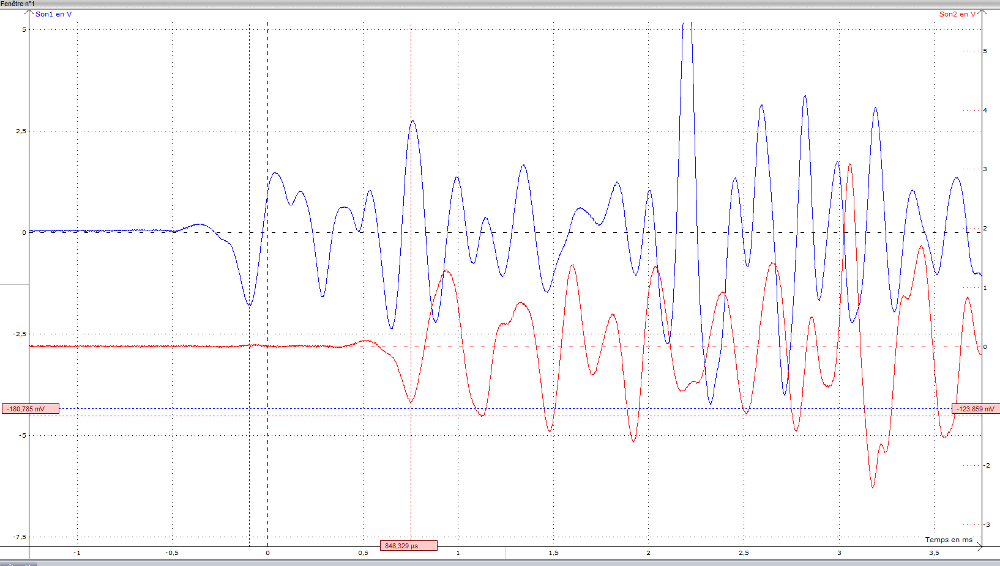
v = D / Δt
Distance D en mètres ; retard Δt en secondes. Une durée ne doit pas être confondue avec une date.
Histoire des sciences
Comment les scientifiques ont-ils réussi à mesurer la vitesse du son ? Explore les recherches historiques, notamment celles de Colladon dans l’eau, puis réponds aux questions de l’activité.
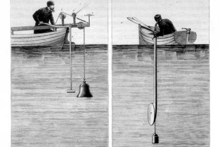
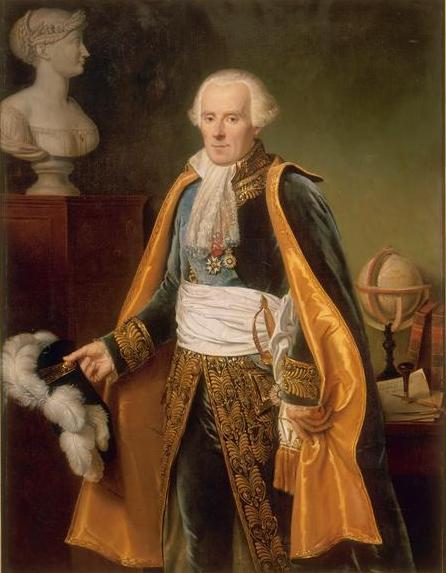
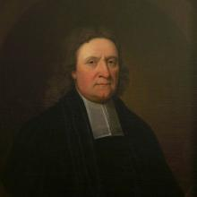
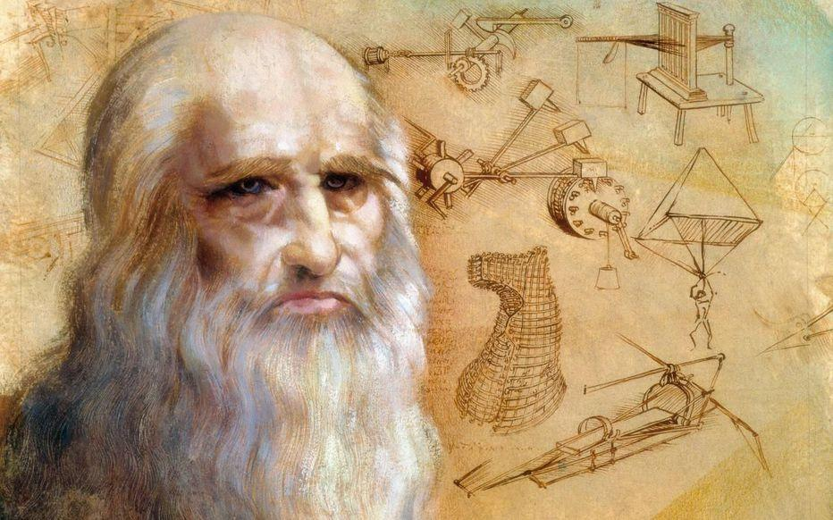
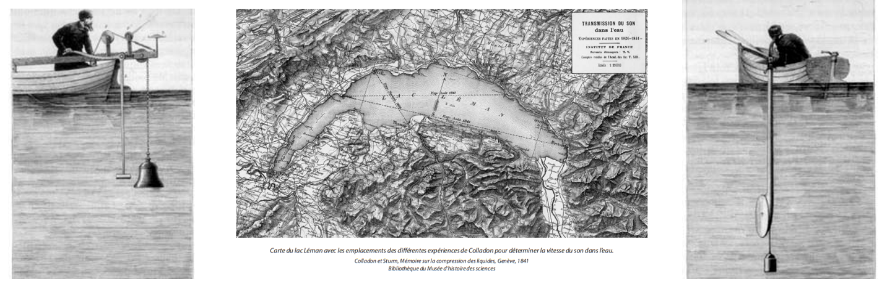
Pour aller plus loin : documents historiques
Activité 1 — Histoire des sciences
Parcours les étapes de cette présentation. Observe comment les méthodes expérimentales ont évolué au fil du temps.
Activité 2 — Coup de tonnerre
Pourquoi voit-on l’éclair avant d’entendre le tonnerre ? Identifie les grandeurs utiles et distingue une date d’une durée.
La progression réalisée dans ces deux présentations n’est pas automatiquement intégrée à la note des questions numériques ci-dessous.
Documents expérimentaux
Document 1 — Du signal sonore au signal électrique
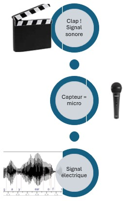
Document — Visualisation d’un signal sonore : représentation temporelle
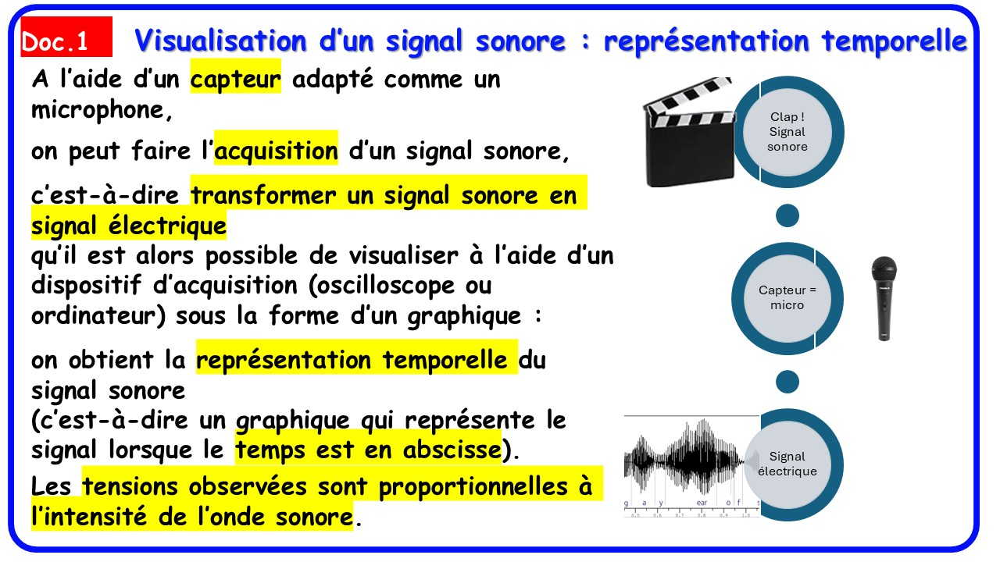
Document 2 — Matériel à disposition
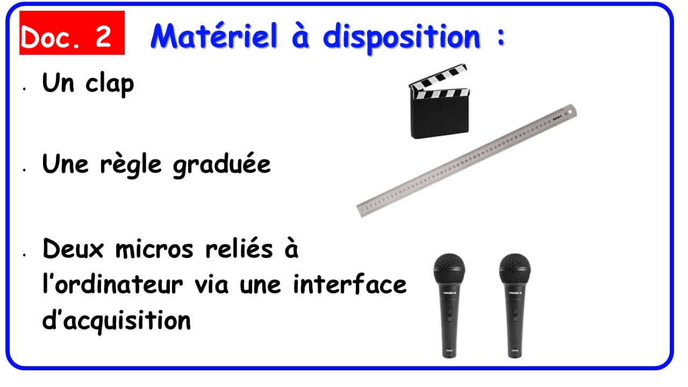
Document 3 — Logiciel LatisPro
Sur l’ordinateur du lycée : sur le Bureau, ouvrir « Physique-Chimie », puis double-cliquer sur LatisPro.
Sur LORDI : LatisPro peut également être utilisé à domicile. Le téléchargement via Éléa ne fonctionne pas hors connexion Éléa ; demander à l’enseignante le lien d’installation public.
Afficher le tutoriel interactif LatisPro (ChatMD)
Document 4 — Compléments scientifiques
Les détails figurent dans le livre Moodle d’origine reproduit plus bas.
Document 5 — Vidéo de l’expérience
Ressources « 4. Réaliser » et « 5. Réaliser »
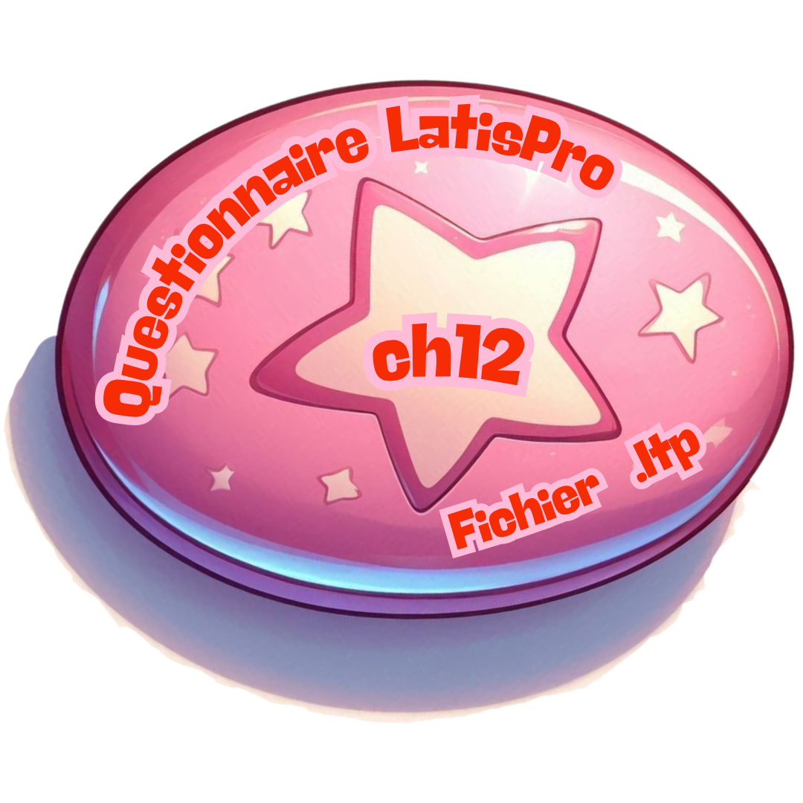
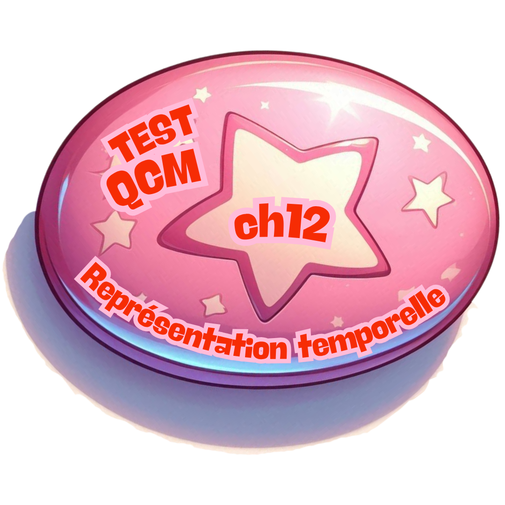
Les illustrations de ces activités sont conservées. Les manipulations effectives sont proposées dans les pages « Signaux » et « Évaluations ».
Afficher les 14 chapitres textuels du livre Moodle original
S’entraîner sur des enregistrements LatisPro
Ces enregistrements ont été réalisés avec le logiciel LatisPro lors d’une expérience. Compare les deux signaux et mesure le retard entre leurs débuts.
Clique une première fois au début du signal du microphone 1.
Pour obtenir une mesure fiable, place chaque curseur au début du signal correspondant. Si nécessaire, augmente le zoom temporel avant de relever Δt.
Notre expérience — Relevé sur la paillasse du professeur
À partir de l’expérience réalisée au bureau, note la distance D entre les microphones et le retard Δt mesuré sur les signaux. Exprime D en mètres et Δt en secondes pour calculer la vitesse du son.
Chaque binôme saisit uniquement les valeurs relevées sur l’ordinateur du professeur pendant l’expérience en classe, et non les données des enregistrements d’entraînement.
Mesures de mon binôme
Ces mesures ne sont pas encore transmises au professeur.
Résultats de la classe — Analyse statistique
Consulte les résultats collectifs uniquement, sans accès aux données individuelles.
Calculs attendus : moyenne de v, écart-type expérimental s, incertitude-type sur la moyenne u(v̄) = s / √n.
La dispersion des mesures doit être interprétée en fonction du protocole réellement utilisé en classe.
Je m’entraîne — Mesurer la vitesse du son
Lis attentivement chaque question. Repère la distance, la durée et les unités. Utilise la calculatrice si nécessaire.
Bilan de ton activité
Tu sais maintenant distinguer une date d’une durée, mesurer le retard Δt entre deux signaux et calculer la vitesse de propagation du son dans l’air : v = D / Δt.
Compare ton résultat à une valeur de référence adaptée à la température de l’air. Identifie ce qui peut expliquer les écarts entre les mesures.